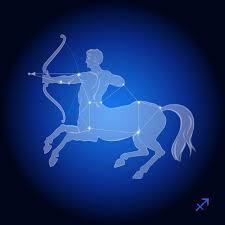

Aries forma parte de los signos cardinales y al mismo
tiempo es un signo de fuego; también es el primer signo
del zodíaco, precisamente por eso, simboliza el inicio,
la creación. Se caracteriza por ser una persona rebosante
de energía y entusiasmo; avanzada y aventurera, adora la libertad,
los retos y las nuevas ideas.

Tauro pertenece a los signos fijos y simultáneamente es un signo de tierra La proyección del Sol en su nacimiento suele influir para que sean personas firmes, decididas y constantes en varios sentidos. También adoran sentir seguridad, por eso la buscan tanto, es como una necesidad constante en sus vidas.

Géminis es un signo mutable que forma parte del elemento aire; como signo de los gemelos, su carácter es doble y bastante contradictorio por complejo . Por una parte es capaz de adaptarse con facilidad y rapidez a todo, pero por otra puede resultar hipócrita. Su distintivo común es la comunicación y el ingenio.

Cáncer es un signo cardinal y comprendido dentro de los signos de agua. De los signos zodiacales, su carácter es el menos claro; puede ser desde retraído, insociable y pelma, hasta deslumbrante, atractivo y admirado por los demás. A veces es demasiado soñador, por eso equivoca el mundo real con la utopía que ha construido en su cabeza: el refugio de las fantasías que adora.

El signo de Leo es fijo y de fuego, también el signo más dominante del zodíaco. Creativo y abierto, tiene ambición, valor, fuerza, autonomía y total seguridad en sí mismo: sabe dónde quiere llegar y nada ni nadie podrá evitarlo. En contrapartida, sus puntos negativos pueden ser tantos como las virtudes que tiene: vanidad, egocentrismo, arrogancia, impostura y un genio de mil demonios, entre otros defectos.

Virgo es un signo mutable y de tierra; representado por una virgen, es un signo caracterizado por su espíritu crítico, precisión, reserva, paciencia y convencionalismo. También es lógico, metódico y aplicado, le gusta aprender y es capaz de analizar las situaciones más complejas con una claridad pasmosa.

Libra es un signo cardinal y de aire, se encuentra además entre los signos más refinados del zodíaco; tiene elegancia, encanto, diplomacia y buen gusto, ama la belleza, es muy curioso por naturaleza y odia los conflictos. Sus puntos negativos a veces son la frivolidad y un carácter voluble.

Escorpio es un signo fijo y de agua; su potencia y energía emocional son únicas en todo el zodíaco. Tiene mucha imaginación e intuición, además de una gran capacidad para el análisis, fuerza de voluntad y firmeza, aunque también es muy sensible y emocional consigo mismo y con el entorno.

Sagitario pertenece a los signos mutables y su elemento es el fuego; es uno de los signos más resplandecientes y positivos del zodíaco. También es versátil, adora las aventuras y buscar nuevos horizontes, ya que tiene una mente abierta a nuevas ideas y experiencias y mantiene una actitud decidida ante la adversidad; además, frecuentemente la suerte le acompaña.
